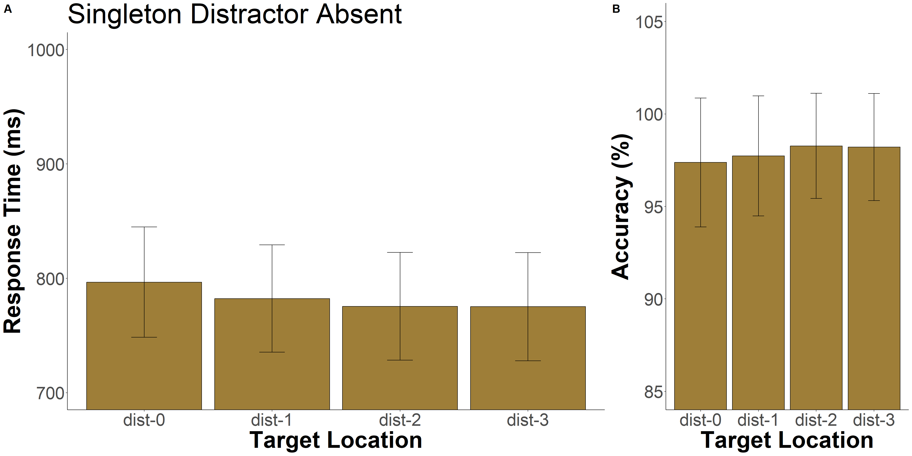

Portfolio 2
1.31.2023
library(tidyverse)
library(tidyr)
library(rstatix)
library(data.table)
library(afex)
library(emmeans)
library(psych)
library(ggsignif)
library(ggprism)
library(patchwork)
library(magrittr)
library(cowplot)The data used is from a visual search task in which participants are searching for a unique item in an array of six items and press a button to indicate whether the item is facing right or left. On 50% of trials, a salient, color distractor is present in the array. On 67% of distractor present trials, the distractor appears in the same location in the array with an equal number of trials in the other 5 locations. This study is testing whether adults can learn to suppress their attention to the high-probabilty location of the distractor.
The goal of this portfolio is to examine the effects of distractor location on accuracy and target location on response time and accuracy.
pilot <- read_csv("p02/pilot_final.csv", show_col_types = FALSE)## New names:
## • `` -> `...1`pilot$relative_hp_dist[pilot$relative_hp_dist == 10] <- "no_dist"
pilot$relative_hp_dist[pilot$relative_hp_dist == 0] <- "dist_0"
pilot$relative_hp_dist[pilot$relative_hp_dist == 1] <- "dist_1"
pilot$relative_hp_dist[pilot$relative_hp_dist == 2] <- "dist_2"
pilot$relative_hp_dist[pilot$relative_hp_dist == 3] <- "dist_3"
pilot$RT <- pilot$RT *1000Target Location Effects on Response Time
Added in the block column at this point just in case I want to use it in the future.
block_num <- rep(c(1,2,3,4,5,6,7,8), each=60, times=21)
pilot <- cbind(pilot, block_num)Added in a column for how the target related to the high-probability distractor location. Used brute force instead of trying to write a fancy function.
pilot <- pilot %>%
mutate(relative_target=
case_when(target_loc=="loc1" & high_prob==1 ~ 0,
target_loc=="loc2" & high_prob==1 ~ 1,
target_loc=="loc3" & high_prob==1 ~ 2,
target_loc=="loc4" & high_prob==1 ~ 3,
target_loc=="loc5" & high_prob==1 ~ 2,
target_loc=="loc6" & high_prob==1 ~ 1,
target_loc=="loc1" & high_prob==2 ~ 1,
target_loc=="loc2" & high_prob==2 ~ 0,
target_loc=="loc3" & high_prob==2 ~ 1,
target_loc=="loc4" & high_prob==2 ~ 2,
target_loc=="loc5" & high_prob==2 ~ 3,
target_loc=="loc6" & high_prob==2 ~ 2,
target_loc=="loc1" & high_prob==3 ~ 2,
target_loc=="loc2" & high_prob==3 ~ 1,
target_loc=="loc3" & high_prob==3 ~ 0,
target_loc=="loc4" & high_prob==3 ~ 1,
target_loc=="loc5" & high_prob==3 ~ 2,
target_loc=="loc6" & high_prob==3 ~ 3,
target_loc=="loc1" & high_prob==4 ~ 3,
target_loc=="loc2" & high_prob==4 ~ 2,
target_loc=="loc3" & high_prob==4 ~ 1,
target_loc=="loc4" & high_prob==4 ~ 0,
target_loc=="loc5" & high_prob==4 ~ 1,
target_loc=="loc6" & high_prob==4 ~ 2,
target_loc=="loc1" & high_prob==5 ~ 2,
target_loc=="loc2" & high_prob==5 ~ 3,
target_loc=="loc3" & high_prob==5 ~ 2,
target_loc=="loc4" & high_prob==5 ~ 1,
target_loc=="loc5" & high_prob==5 ~ 0,
target_loc=="loc6" & high_prob==5 ~ 1,
target_loc=="loc1" & high_prob==6 ~ 1,
target_loc=="loc2" & high_prob==6 ~ 2,
target_loc=="loc3" & high_prob==6 ~ 3,
target_loc=="loc4" & high_prob==6 ~ 2,
target_loc=="loc5" & high_prob==6 ~ 1,
target_loc=="loc6" & high_prob==6 ~ 0,))
pilot$relative_target[pilot$relative_target == 0] <- "high_prob"
pilot$relative_target[pilot$relative_target == 1] <- "lp_1"
pilot$relative_target[pilot$relative_target == 2] <- "lp_2"
pilot$relative_target[pilot$relative_target == 3] <- "lp_3"Trim the Data
Define trimming criteria according to Van Selst and Jolicoeur 1994
xsize <- c(4, 5, 6, 7, 8, 9, 10, 11, 12, 13, 14, 15, 20,
25, 30, 35, 50, 100)
stds <- c(1.458, 1.68, 1.841, 1.961, 2.05, 2.12, 2.173,
2.22, 2.246, 2.274, 2.31, 2.326, 2.391, 2.41, 2.4305,
2.45, 2.48, 2.5)Trim the data and compute the percent trimmed
add_this<- pilot[pilot$acc==100,]
trimmed <- add_this[add_this$relative_hp_dist=="no_dist",] %>%
group_by(ID, relative_target) %>%
mutate(sdc = ifelse(length(RT)>=100,2.5,approx(xsize,stds,xout=length(RT))$y), avg = mean(RT), stdev = sd(RT)) %>%
filter(RT <= sdc*stdev+avg & RT >=avg-(sdc*stdev) & RT >=.200) %>%
select(ID, relative_hp_dist, RT, block_num, relative_target) %>%
as.data.frame()
statPrep <- trimmed %>% group_by(ID, relative_target) %>% summarise(measurement=mean(RT)) %>% as.data.frame()## `summarise()` has grouped output by 'ID'. You can override using the `.groups`
## argument.100-(nrow(trimmed)/nrow(add_this[add_this$relative_hp_dist=="no_dist",]))*100## [1] 2.694489Again, trimmed 2.69% of trials.
###Target Location Effects
Create new data frame with the mean response times grouped by distractor location relative to the high-probability location and add columns for standard error.
target_means <- trimmed %>%
filter(relative_hp_dist=="no_dist") %>%
group_by(relative_target) %>%
summarize(mean_rts=mean(RT),
sd_rt=sd(RT),
n_rt=21,
se=sd_rt/sqrt(n_rt),
upper_limit=mean_rts+se,
lower_limit=mean_rts-se
)
target_means## # A tibble: 4 × 7
## relative_target mean_rts sd_rt n_rt se upper_limit lower_limit
## <chr> <dbl> <dbl> <dbl> <dbl> <dbl> <dbl>
## 1 high_prob 797. 221. 21 48.2 845. 749.
## 2 lp_1 782. 215. 21 46.8 829. 736.
## 3 lp_2 776. 216. 21 47.1 823. 728.
## 4 lp_3 775. 217. 21 47.2 822. 728.This figure displays the mean response times depending on the location of the target relative to the high probability location of the distractor. I chose those particular colors based on Wake Forest’s color scheme.
c<-ggplot(data = target_means, aes(x = relative_target, y = mean_rts, fill=relative_target)) +
geom_bar(stat = "identity", show.legend = FALSE) +
geom_errorbar(aes(ymin=lower_limit, ymax=upper_limit), width=0.2)+
coord_cartesian(ylim = c(700,1000))+
theme_classic()+
scale_fill_brewer(palette="Dark2")+
labs(x = "Target Location", y = "Response Time (ms)")+
labs(title = "Singleton Distractor Absent")+
theme(axis.text=element_text(size=30),
axis.title=element_text(size=40,face="bold"),
title = element_text(size = 40))+
scale_x_discrete(labels= c("high_prob"="HP loc","lp_1"="dist-1", "lp_2"="dist-2", "lp_3"="dist-3"))df2 <- subset(trimmed,block_num!='7' & relative_hp_dist=="no_dist")
df2 <- subset(df2,block_num!='8')
df2 <- subset(df2,block_num!='5')
df2 <- subset(df2,block_num!='6')
space2<- df2 %>%
group_by(ID, relative_target) %>%
summarize(rts = mean(RT)
)## `summarise()` has grouped output by 'ID'. You can override using the `.groups`
## argument.space2## # A tibble: 84 × 3
## # Groups: ID [21]
## ID relative_target rts
## <dbl> <chr> <dbl>
## 1 11 high_prob 1195.
## 2 11 lp_1 1177.
## 3 11 lp_2 1180.
## 4 11 lp_3 1166.
## 5 12 high_prob 875.
## 6 12 lp_1 811.
## 7 12 lp_2 764.
## 8 12 lp_3 755.
## 9 13 high_prob 789.
## 10 13 lp_1 814.
## # … with 74 more rowsaov_car(rts ~ relative_target + Error(ID/relative_target), data=space2)## Anova Table (Type 3 tests)
##
## Response: rts
## Effect df MSE F ges p.value
## 1 relative_target 1.62, 32.39 3706.09 0.96 .004 .376
## ---
## Signif. codes: 0 '***' 0.001 '**' 0.01 '*' 0.05 '+' 0.1 ' ' 1
##
## Sphericity correction method: GGCreate a new data frame with the average RT for each relative distractor location per participant, so we can do a repeated measures ANOVA.
space <- trimmed %>%
subset(relative_hp_dist=="no_dist")%>%
group_by(ID, relative_target) %>%
summarize(rts = mean(RT),
)## `summarise()` has grouped output by 'ID'. You can override using the `.groups`
## argument.space## # A tibble: 84 × 3
## # Groups: ID [21]
## ID relative_target rts
## <dbl> <chr> <dbl>
## 1 11 high_prob 1088.
## 2 11 lp_1 1083.
## 3 11 lp_2 1056.
## 4 11 lp_3 1102.
## 5 12 high_prob 801.
## 6 12 lp_1 749.
## 7 12 lp_2 701.
## 8 12 lp_3 708.
## 9 13 high_prob 748.
## 10 13 lp_1 756.
## # … with 74 more rowsNeed to reformat the above df to have a column for each relative_hp_dist/ID.
space_anova <- setDT(space)
space_anova <- dcast(space_anova,ID~relative_target,value.var='rts')#first identify outliers - not sure what to do with them anyway so overall just ignore? maybe reason enough to get rid of ppt 11? ppt 11 was problematic in most tests
space %>%
group_by(relative_target) %>%
identify_outliers(rts)## # A tibble: 7 × 5
## relative_target ID rts is.outlier is.extreme
## <chr> <dbl> <dbl> <lgl> <lgl>
## 1 high_prob 11 1088. TRUE FALSE
## 2 lp_1 11 1083. TRUE TRUE
## 3 lp_1 20 983. TRUE FALSE
## 4 lp_2 11 1056. TRUE FALSE
## 5 lp_2 20 1004. TRUE FALSE
## 6 lp_3 11 1102. TRUE FALSE
## 7 lp_3 20 1001. TRUE FALSE#testing the normality assumption -- data is normally distributed enough because no conditions have a p-value less than .05
space %>%
group_by(relative_target) %>%
shapiro_test(rts)## # A tibble: 4 × 4
## relative_target variable statistic p
## <chr> <chr> <dbl> <dbl>
## 1 high_prob rts 0.913 0.0640
## 2 lp_1 rts 0.924 0.105
## 3 lp_2 rts 0.912 0.0594
## 4 lp_3 rts 0.900 0.0357Assumption of sphericity is automatically checked during the ANOVA test. Next, we’ll do the ANOVA test. The ANOVA shows a significant difference among distractor locations, F(1.74,34.86)=12.925, p<.001.
res.aov <- anova_test(data = space, dv = rts, wid = ID, within = relative_target)
get_anova_table(res.aov)## ANOVA Table (type III tests)
##
## Effect DFn DFd F p p<.05 ges
## 1 relative_target 2 40.09 2.05 0.142 0.006I ran the ANOVA using base R as well because the rstatix package was giving me errors when running for accuracy data later on. The rstatix packages has a lot of requests and hasn’t been updated in years so I switched to a different route to get the same results.
model = aov(rts~factor(relative_target)+
Error(factor(ID)), data=space)
summary(model)##
## Error: factor(ID)
## Df Sum Sq Mean Sq F value Pr(>F)
## Residuals 20 1081449 54072
##
## Error: Within
## Df Sum Sq Mean Sq F value Pr(>F)
## factor(relative_target) 3 6629 2210 2.05 0.116
## Residuals 60 64684 1078model2 <- aov_car(rts ~ relative_target + Error(ID/relative_target), data=space)
summary(model2)##
## Univariate Type III Repeated-Measures ANOVA Assuming Sphericity
##
## Sum Sq num Df Error SS den Df F value Pr(>F)
## (Intercept) 51400027 1 1081449 20 950.5772 <2e-16 ***
## relative_target 6629 3 64684 60 2.0495 0.1165
## ---
## Signif. codes: 0 '***' 0.001 '**' 0.01 '*' 0.05 '.' 0.1 ' ' 1
##
##
## Mauchly Tests for Sphericity
##
## Test statistic p-value
## relative_target 0.33078 0.00093538
##
##
## Greenhouse-Geisser and Huynh-Feldt Corrections
## for Departure from Sphericity
##
## GG eps Pr(>F[GG])
## relative_target 0.66819 0.142
##
## HF eps Pr(>F[HF])
## relative_target 0.7427063 0.1359304model2## Anova Table (Type 3 tests)
##
## Response: rts
## Effect df MSE F ges p.value
## 1 relative_target 2.00, 40.09 1613.42 2.05 .006 .142
## ---
## Signif. codes: 0 '***' 0.001 '**' 0.01 '*' 0.05 '+' 0.1 ' ' 1
##
## Sphericity correction method: GGThis next section will examine the differences between response times when averaging across low-probability locations.
space_anova <- space_anova %>%
mutate(low_prob = (lp_1+lp_2+lp_3)/3)df_mod <- subset(space_anova, select=c(ID, high_prob, low_prob))
df_mod <- reshape2::melt(df_mod, id.var=c('ID'), variable.name= "relative_target")sum_stats2 <- df_mod%>%
group_by(relative_target)%>%
summarize(mean_rts=mean(value),
sd_rt=sd(value),
n_rt=21,
se=sd_rt/sqrt(n_rt),
upper_limit=mean_rts+se,
lower_limit=mean_rts-se
)
sum_stats2## # A tibble: 2 × 7
## relative_target mean_rts sd_rt n_rt se upper_limit lower_limit
## <fct> <dbl> <dbl> <dbl> <dbl> <dbl> <dbl>
## 1 high_prob 797. 120. 21 26.2 823. 771.
## 2 low_prob 777. 117. 21 25.6 803. 752.Determine if the difference between response times when the target is in the high-probability vs. low-probability locations is significant.
t.test(x=space_anova$high_prob, y=space_anova$low_prob, alternative="greater", mu=0,paired = TRUE, conf.level = .95)##
## Paired t-test
##
## data: space_anova$high_prob and space_anova$low_prob
## t = 1.8799, df = 20, p-value = 0.03738
## alternative hypothesis: true mean difference is greater than 0
## 95 percent confidence interval:
## 1.619941 Inf
## sample estimates:
## mean difference
## 19.62472result<- 0.037#Make df for adding the p-value
p_val<- data.frame(
group_1="high_prob",
group_2="low_prob",
label="*",
y.position=900
)This figure displays the mean response times depending on the location of the target relative to the high probability location. I chose those particular colors based on Wake Forest’s color scheme.
ggplot(data = sum_stats2, aes(x = relative_target, y = mean_rts)) +
geom_bar(stat = "identity", fill="#9E7E38", color='#000000') +
geom_errorbar(aes(ymin=lower_limit, ymax=upper_limit), width=0.2)+
coord_cartesian(ylim = c(700,1000))+
theme_classic()+
add_pvalue(p_val,
xmin = "group_1",
xmax = "group_2",
label = "{label}",
y.position = "y.position",
label.size = 7,
bracket.size = 1) +
#geom_signif(comparisons=list(c("dist_0","low_prob")), annotations="*")+
labs(x = "Target Location", y = "Response Time (ms)")+
labs(title = "Target Location Effect on RT")+
#labs(caption = "A t-test shows a difference in RT depending on distractor location, t(20)=1.91, p=.035.")+
theme(axis.text=element_text(size=14),
axis.title=element_text(size=18,face="bold"),
title = element_text(size = 20))+
scale_x_discrete(labels= c("high_prob"="High Prob Distractor Location","low_prob"="Low Prob Distractor Location"))
Test for significant differences between the high and low prob locations for 6 blocks and 4 blocks.
space_half <- setDT(space2)
space_half <- dcast(space_half,ID~relative_target,value.var='rts')
space_half <- space_half %>%
mutate(low_prob = (lp_1+lp_2+lp_3)/3)
space_half %>%
t.test(x=space_half$high_prob, y=space_half$low_prob, alternative="greater", mu=0,paired = TRUE, conf.level = .95)##
## Paired t-test
##
## data: space_half$high_prob and space_half$low_prob
## t = 1.0802, df = 20, p-value = 0.1464
## alternative hypothesis: true mean difference is greater than 0
## 95 percent confidence interval:
## -10.17031 Inf
## sample estimates:
## mean difference
## 17.04616Examine the summary statistics for subset of data.
df_mod2 <- subset(space_half, select=c(ID, high_prob, low_prob))
df_mod2 <- reshape2::melt(df_mod2, id.var=c('ID'), variable.name= "relative_target")
sum_stats3 <- df_mod2%>%
group_by(relative_target)%>%
summarize(mean_rts=mean(value),
sd_rt=sd(value),
n_rt=21,
se=sd_rt/sqrt(n_rt),
upper_limit=mean_rts+se,
lower_limit=mean_rts-se
)
sum_stats3## # A tibble: 2 × 7
## relative_target mean_rts sd_rt n_rt se upper_limit lower_limit
## <fct> <dbl> <dbl> <dbl> <dbl> <dbl> <dbl>
## 1 high_prob 853. 142. 21 31.0 884. 822.
## 2 low_prob 836. 137. 21 30.0 866. 806.Distractor and Target Location Effects on Accuracy
pilot_distacc <- pilot %>%
group_by(relative_hp_dist) %>%
summarize(accuracy = mean(acc),
sd_rt=sd(acc),
n_rt=21,
se=sd_rt/sqrt(n_rt),
upper_limit=accuracy+se,
lower_limit=accuracy-se
)
pilot_targacc <- pilot %>%
subset(relative_hp_dist=="no_dist")%>%
group_by(relative_target) %>%
summarize(accuracy = mean(acc),
sd_rt=sd(acc),
n_rt=21,
se=sd_rt/sqrt(n_rt),
upper_limit=accuracy+se,
lower_limit=accuracy-se
)ggplot(data = pilot_distacc, aes(x = relative_hp_dist, y = accuracy)) +
geom_bar(stat = "identity", fill="#9E7E38", color='#000000') +
geom_errorbar(aes(ymin=lower_limit, ymax=upper_limit), width=0.2)+
coord_cartesian(ylim = c(85,105))+
theme_classic()+
labs(x = "Distractor Location", y = "Accuracy (%)")+
#labs(title = "Distractor Location Effect on Accuracy")+
theme(axis.text=element_text(size=14),
axis.title=element_text(size=16,face="bold"),
title = element_text(size = 16))+
scale_x_discrete(labels= c("no_dist"="no-dist","dist_0"="dist-0","dist_1"="dist-1","dist_2"="dist-2","dist_3"="dist-3"))
d<-ggplot(data = pilot_targacc, aes(x = relative_target, y = accuracy, fill=relative_target)) +
geom_bar(stat = "identity", show.legend = FALSE) +
geom_errorbar(aes(ymin=lower_limit, ymax=upper_limit), width=0.2)+
coord_cartesian(ylim = c(85,105))+
theme_classic()+
scale_fill_brewer(palette="Dark2")+
labs(x = "Target Location", y = "Accuracy (%)")+
#labs(title = "Target Location Effect on Accuracy")+
theme(axis.text=element_text(size=30),
axis.title=element_text(size=40,face="bold"),
title = element_text(size = 40))+
scale_x_discrete(labels= c("high_prob"="HP loc","lp_1"="1","lp_2"="2","lp_3"="3"))Created the below plot for NC Cognition Poster.
plot_grid(c,d,labels = c('C','D'), label_size=40, rel_widths = c(2,1))
pilot_dist <- pilot %>%
group_by(ID, relative_hp_dist) %>%
summarize(accuracy = mean(acc)
)## `summarise()` has grouped output by 'ID'. You can override using the `.groups`
## argument.pilot_dist## # A tibble: 105 × 3
## # Groups: ID [21]
## ID relative_hp_dist accuracy
## <dbl> <chr> <dbl>
## 1 11 dist_0 94.4
## 2 11 dist_1 93.8
## 3 11 dist_2 90.6
## 4 11 dist_3 93.8
## 5 11 no_dist 97.9
## 6 12 dist_0 98.1
## 7 12 dist_1 93.8
## 8 12 dist_2 96.9
## 9 12 dist_3 100
## 10 12 no_dist 99.6
## # … with 95 more rowspilot_targ <- pilot %>%
subset(relative_hp_dist=="no_dist")%>%
group_by(ID, relative_target) %>%
summarize(accuracy = mean(acc)
)## `summarise()` has grouped output by 'ID'. You can override using the `.groups`
## argument.pilot_targ## # A tibble: 84 × 3
## # Groups: ID [21]
## ID relative_target accuracy
## <dbl> <chr> <dbl>
## 1 11 high_prob 97.5
## 2 11 lp_1 97.5
## 3 11 lp_2 97.5
## 4 11 lp_3 100
## 5 12 high_prob 100
## 6 12 lp_1 100
## 7 12 lp_2 98.8
## 8 12 lp_3 100
## 9 13 high_prob 100
## 10 13 lp_1 100
## # … with 74 more rowsmodel = aov(accuracy~factor(relative_hp_dist)+
Error(factor(ID)), data=pilot_dist)
summary(model)##
## Error: factor(ID)
## Df Sum Sq Mean Sq F value Pr(>F)
## Residuals 20 1096 54.82
##
## Error: Within
## Df Sum Sq Mean Sq F value Pr(>F)
## factor(relative_hp_dist) 4 227.6 56.91 3.235 0.0163 *
## Residuals 80 1407.3 17.59
## ---
## Signif. codes: 0 '***' 0.001 '**' 0.01 '*' 0.05 '.' 0.1 ' ' 1model2 <- aov_car(accuracy ~ relative_hp_dist + Error(ID/relative_hp_dist), data=pilot_dist)
model2## Anova Table (Type 3 tests)
##
## Response: accuracy
## Effect df MSE F ges p.value
## 1 relative_hp_dist 1.32, 26.40 53.31 3.24 + .083 .073
## ---
## Signif. codes: 0 '***' 0.001 '**' 0.01 '*' 0.05 '+' 0.1 ' ' 1
##
## Sphericity correction method: GGmodel = aov(accuracy~factor(relative_target)+
Error(factor(ID)), data=pilot_targ)
summary(model)##
## Error: factor(ID)
## Df Sum Sq Mean Sq F value Pr(>F)
## Residuals 20 225.9 11.29
##
## Error: Within
## Df Sum Sq Mean Sq F value Pr(>F)
## factor(relative_target) 3 11.22 3.739 1.211 0.314
## Residuals 60 185.27 3.088model2 <- aov_car(accuracy ~ relative_target + Error(ID/relative_target), data=pilot_targ)
model2## Anova Table (Type 3 tests)
##
## Response: accuracy
## Effect df MSE F ges p.value
## 1 relative_target 2.46, 49.12 3.77 1.21 .027 .312
## ---
## Signif. codes: 0 '***' 0.001 '**' 0.01 '*' 0.05 '+' 0.1 ' ' 1
##
## Sphericity correction method: GGCreate df and do t-test for HP and average of LP locations.
targ_t <- setDT(pilot_targ)
targ_t <- dcast(pilot_targ,ID~relative_target,value.var='accuracy')
targ_t <- targ_t %>%
mutate(low_prob = (lp_1+lp_2+lp_3)/3)
targ_t %>%
t.test(x=targ_t$low_prob, y=targ_t$high_prob, alternative="greater", mu=0,paired = TRUE, conf.level = .95) ##
## Paired t-test
##
## data: targ_t$low_prob and targ_t$high_prob
## t = 1.2922, df = 20, p-value = 0.1055
## alternative hypothesis: true mean difference is greater than 0
## 95 percent confidence interval:
## -0.2324223 Inf
## sample estimates:
## mean difference
## 0.6944444dist_t <- setDT(pilot_dist)
dist_t <- dcast(pilot_dist,ID~relative_hp_dist,value.var='accuracy')
dist_t <- dist_t %>%
mutate(low_prob = (dist_1+dist_2+dist_3)/3)
dist_t %>%
t.test(x=dist_t$dist_0, y=dist_t$low_prob, alternative="greater", mu=0,paired = TRUE, conf.level = .95)##
## Paired t-test
##
## data: dist_t$dist_0 and dist_t$low_prob
## t = 2.1259, df = 20, p-value = 0.02308
## alternative hypothesis: true mean difference is greater than 0
## 95 percent confidence interval:
## 0.2579158 Inf
## sample estimates:
## mean difference
## 1.366686dist_t %>%
t.test(x=dist_t$no_dist, y=dist_t$dist_0, alternative="greater", mu=0,paired = TRUE, conf.level = .95) ##
## Paired t-test
##
## data: dist_t$no_dist and dist_t$dist_0
## t = 5.6153, df = 20, p-value = 8.501e-06
## alternative hypothesis: true mean difference is greater than 0
## 95 percent confidence interval:
## 1.254909 Inf
## sample estimates:
## mean difference
## 1.811224dist_t %>%
t.test(x=dist_t$no_dist, y=dist_t$low_prob, alternative="greater", mu=0,paired = TRUE, conf.level = .95) ##
## Paired t-test
##
## data: dist_t$no_dist and dist_t$low_prob
## t = 3.8565, df = 20, p-value = 0.0004919
## alternative hypothesis: true mean difference is greater than 0
## 95 percent confidence interval:
## 1.756682 Inf
## sample estimates:
## mean difference
## 3.17791Running ANOVA on high-prob, low-prob, and distractor absent trials.
df_mod <- subset(dist_t, select=c(ID, no_dist, dist_0, low_prob))
df_mod <- reshape2::melt(df_mod, id.var=c('ID'), variable.name= "relative_hp_dist")
#run the ANOVA
anova_dist <- aov_car(value ~ relative_hp_dist + Error(ID/relative_hp_dist), data=df_mod)
anova_dist## Anova Table (Type 3 tests)
##
## Response: value
## Effect df MSE F ges p.value
## 1 relative_hp_dist 1.18, 23.61 7.09 12.74 *** .160 <.001
## ---
## Signif. codes: 0 '***' 0.001 '**' 0.01 '*' 0.05 '+' 0.1 ' ' 1
##
## Sphericity correction method: GGExamining only some of the block of trials.
df3 <- subset(pilot,block_num!='7')
df3 <- subset(df3,block_num!='8')
df3 <- subset(df3,block_num!='5')
df3 <- subset(df3,block_num!='6')pilot_dist3 <- df3 %>%
group_by(ID, relative_hp_dist) %>%
summarize(accuracy = mean(acc)
)## `summarise()` has grouped output by 'ID'. You can override using the `.groups`
## argument.pilot_targ3 <- df3 %>%
subset(relative_hp_dist="no_dist")%>%
group_by(ID, relative_target) %>%
summarize(accuracy = mean(acc)
)## `summarise()` has grouped output by 'ID'. You can override using the `.groups`
## argument.aov_car(accuracy ~ relative_hp_dist + Error(ID/relative_hp_dist), data=pilot_dist3)## Anova Table (Type 3 tests)
##
## Response: accuracy
## Effect df MSE F ges p.value
## 1 relative_hp_dist 1.89, 37.78 47.82 3.02 + .075 .064
## ---
## Signif. codes: 0 '***' 0.001 '**' 0.01 '*' 0.05 '+' 0.1 ' ' 1
##
## Sphericity correction method: GGaov_car(accuracy ~ relative_target + Error(ID/relative_target), data=pilot_targ3)## Anova Table (Type 3 tests)
##
## Response: accuracy
## Effect df MSE F ges p.value
## 1 relative_target 2.16, 43.11 9.46 2.75 + .066 .071
## ---
## Signif. codes: 0 '***' 0.001 '**' 0.01 '*' 0.05 '+' 0.1 ' ' 1
##
## Sphericity correction method: GG